Maple Island — quest-and-grind route
Part 1 of the leveling guide. Source-backed draft; not a measured minimum-time route.
About this guide
Status: source-backed draft, not a measured fastest route. Scope is Maple Island only. Assumes a fresh solo Beginner starting at Roger, ordinary starter equipment, no funded items, party, XP boosts or teleport shortcuts. Job, target level, combat rates and live build remain unspecified. Endpoint is Southperry ready to depart, not a claimed time-to-level result.
Source: NiaMeowDB's Maple Island index. Map pages warn that values are from the second closed test and live-launch comparison is in progress. Confirm quest availability and objectives in your client.
Follow the route in order. Included quests are instructions, not choices. Skipped quests and rejected hunting maps are listed at the end with the reason each was rejected. These decisions are provisional until timed comparisons confirm or change them.
Reading the images: green circles mark the NPC to talk to; blue circles mark the portal to enter for that specific action. Each image shows your current map, not the destination. The two Mushroom Town maps are distinguished as Roger's map and Nina's map. Open this file in a Markdown preview; all images are local and work offline. Artwork is from NiaMeowDB; the instruction highlights were added locally.
1. Roger — Mushroom Town, Roger's map0 / 2
Map, completion and why
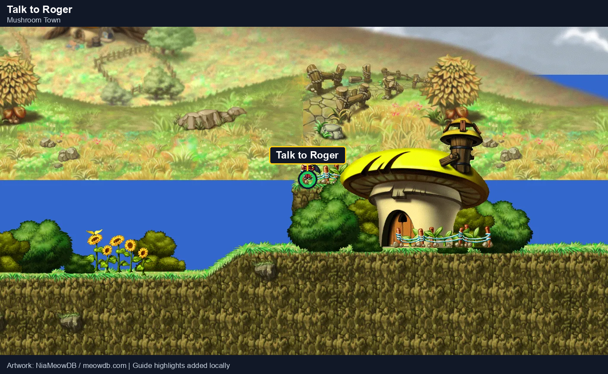
Complete when: Roger's Apple shows as completed in your quest log.
Why: Roger stands at the start and the quest needs no travel or hunting, so its cost is only the dialogue and one item use. It is kept as the source's starting tutorial; its dialogue time is unmeasured.
Sources: Roger's Apple
Map, completion and why
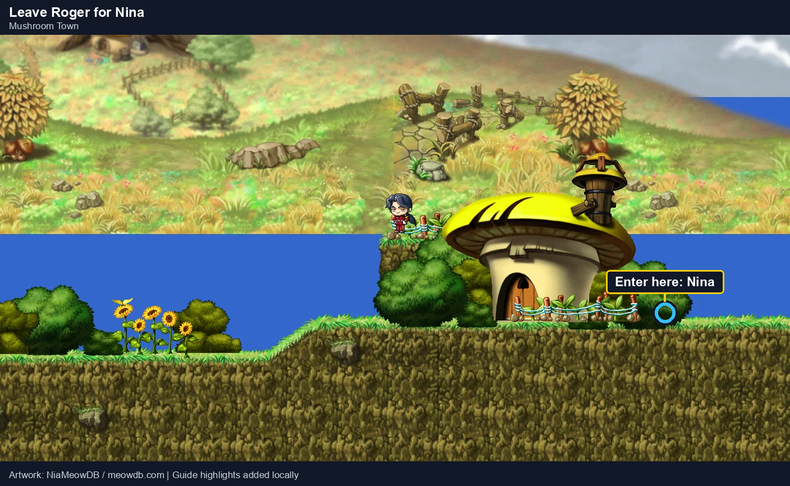
Complete when: You arrive on Nina's Mushroom Town map.
Why: This is the only exit toward the rest of the route. The other exit leads only to the mirror chain, which this route skips (see Route decisions).


2. Nina and Sen — Mushroom Town and Townstreet0 / 6
Map, completion and why
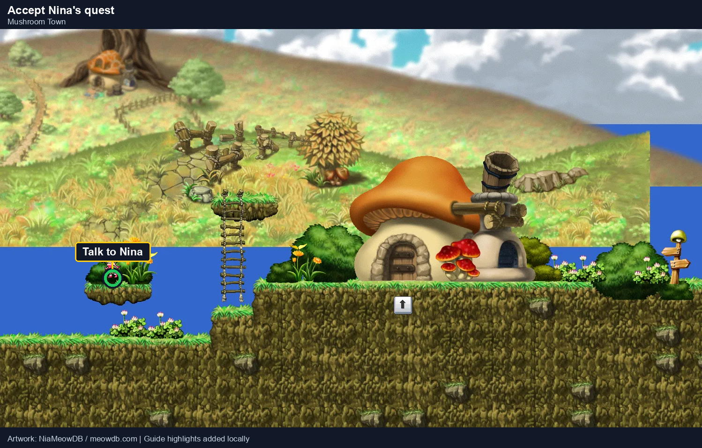
Complete when: What Sen wants to eat is active in your quest log.
Why: Nina is on the only path out of town. The chain adds one map entry and one return (Townstreet is a dead end) for 3 listed quest XP; it is kept as the tutorial chain, and its dialogue/travel time is unmeasured, so it is not claimed to beat grinding.
Sources: What Sen wants to eat
Map, completion and why
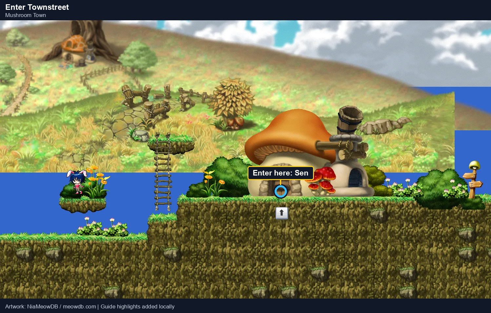
Complete when: You arrive in Townstreet next to Sen.
Why: Sen is the only NPC who can advance Nina's quest; Townstreet is reached only through this portal.
Map, completion and why
Complete when: What Sen wants to eat is complete and Returning to Nina is active.
Why: Accepting the follow-up here avoids a second visit: Returning to Nina is unlocked by finishing the first stage and is turned in on the way out.
Sources: Returning to Nina
Map, completion and why
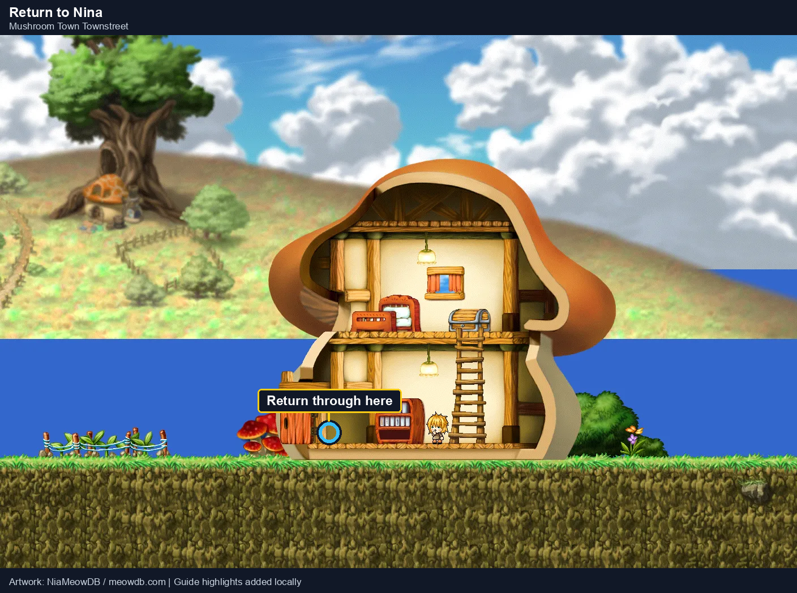
Complete when: You are back on Nina's Mushroom Town map.
Why: Townstreet has only this one exit, so the return is forced.
Map, completion and why
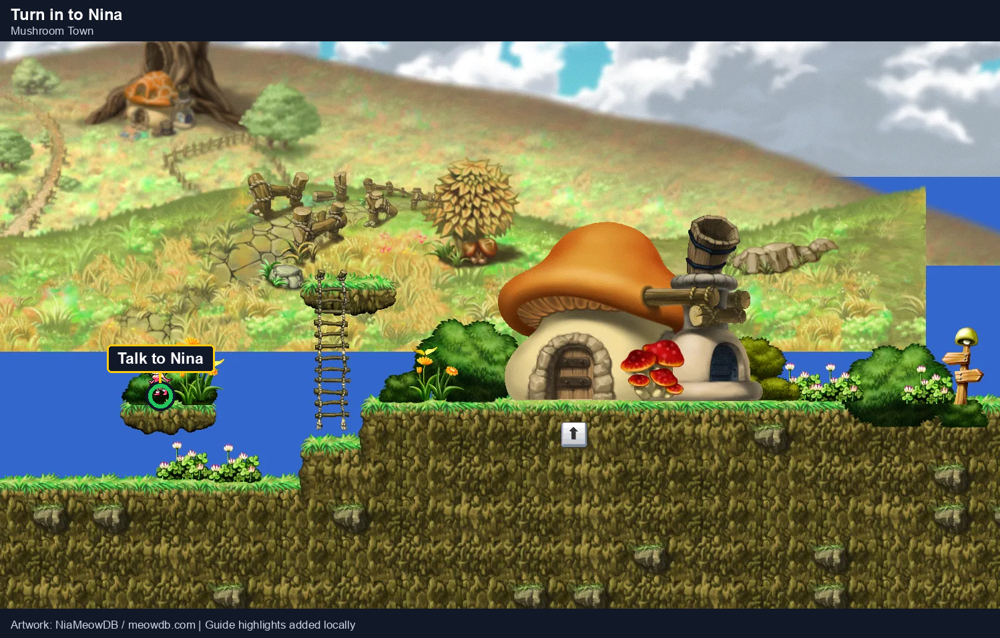
Complete when: Returning to Nina shows as completed.
Why: Nina is on the path toward East Entrance, so the turn-in adds dialogue but no travel.
Map, completion and why
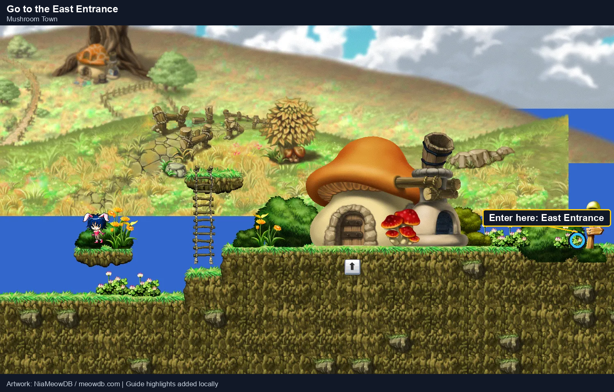
Complete when: You arrive at East Entrance to Mushroom Town.
Why: East Entrance is the only onward map from here toward the Snail Hunting Grounds.


3. Todd and Peter — East Entrance to Mushroom Town0 / 3
Map, completion and why
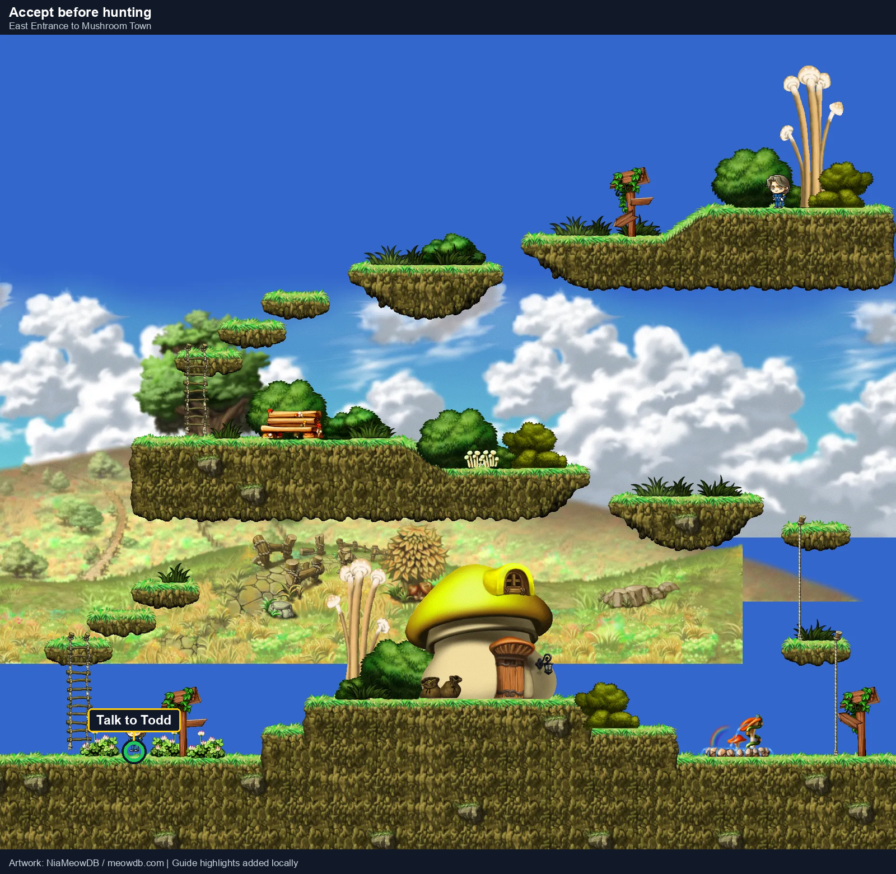
Complete when: Todd's How-to-Hunt is active in your quest log.
Why: Kills only count while the quest is active, so accepting first avoids repeat hunting. Todd stands on the map you must cross anyway.
Sources: Todd's How-to-Hunt
Map, completion and why
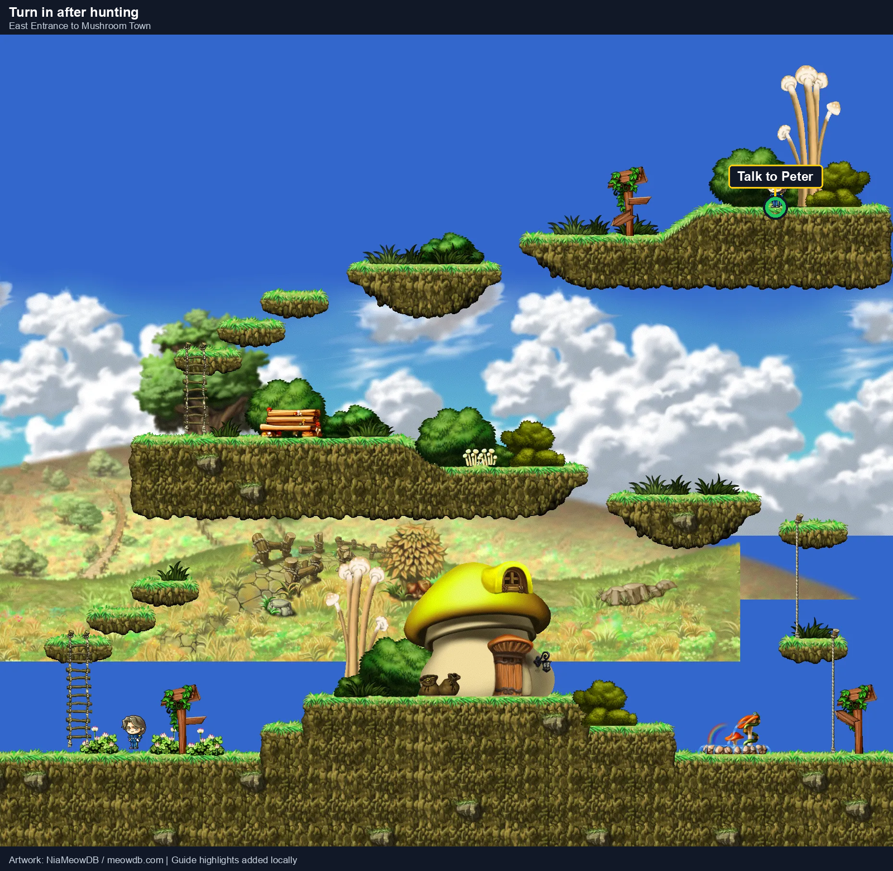
Complete when: Todd's How-to-Hunt shows as completed and Peter has taken the 3 shellpieces.
Why: The Sentinels exist only on this map, and Peter is here too, so hunting and turn-in add no travel. The shellpiece drop rate is unknown, so the number of extra kills cannot be predicted.
Map, completion and why
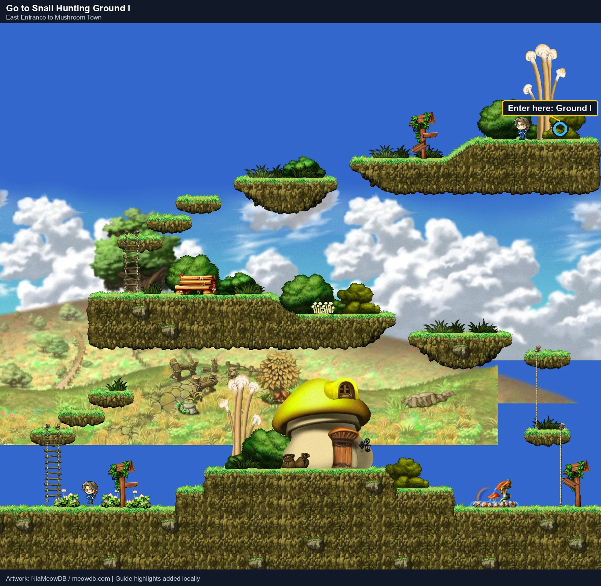
Complete when: You arrive on Snail Hunting Ground I.
Why: Snail Hunting Ground I is the only way onward and holds Sam, the next quest giver.


4. Sam — Snail Hunting Ground I0 / 4
Map, completion and why
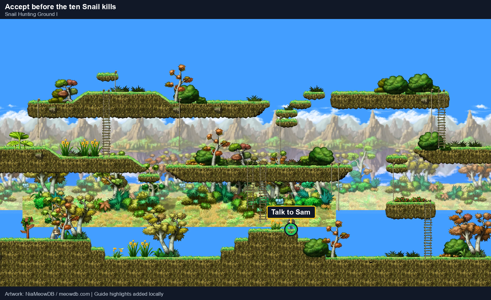
Complete when: Sam's Suggestion shows 10 of 10 Snails defeated.
Why: Snail Hunting Ground I lists 40 Snails, all of its monsters, against 32 on Ground II and 20 on Ground III, and you must cross it anyway. Hunting here needs no extra travel. Only Snails count; Mai's later Blue Snail and Red Snail counters are not active yet.
Sources: Sam's Suggestion
Map, completion and why
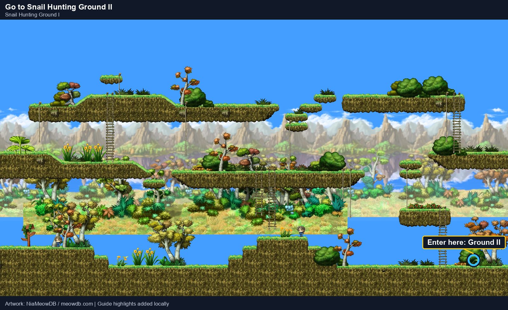
Complete when: You arrive on Snail Hunting Ground II.
Why: This is the only onward exit from Ground I. Its listed link back toward East Entrance has no outgoing portal in the source data.
Map, completion and why
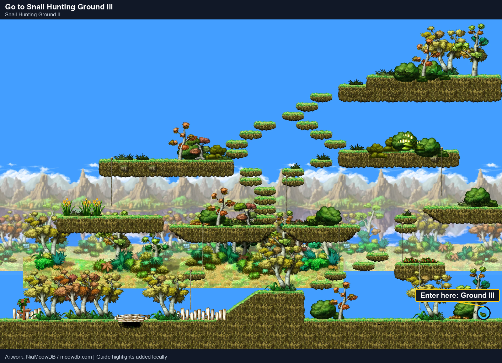
Complete when: You arrive on Snail Hunting Ground III.
Why: Ground II is a pass-through. None of its monsters count for an active quest, and A Split Road has more of Mai's targets.
Map, completion and why
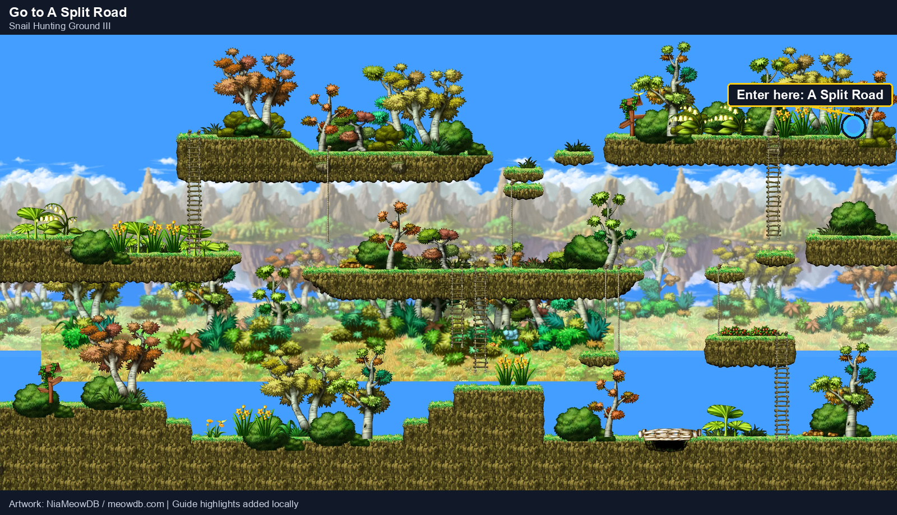
Complete when: You arrive on A Split Road.
Why: Ground III lists only 1 Red Snail and no Shrooms, and Mai's Training is not active yet, so hunting here does not help.


5. Mai and Maria — train on A Split Road0 / 4
Map, completion and why
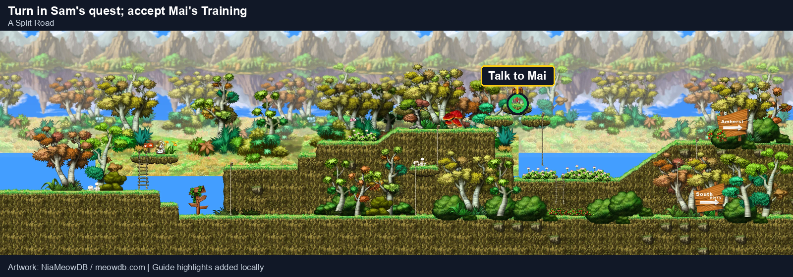
Complete when: Sam's Suggestion is complete, you are at least level 3, and Mai's Training is active.
Why: Mai's Training needs level 3. A Split Road has all three training species, so any levelling done here happens on the map where the training is hunted next. Kills made before accepting do not count toward the training.
Sources: Mai's Training
Map, completion and why
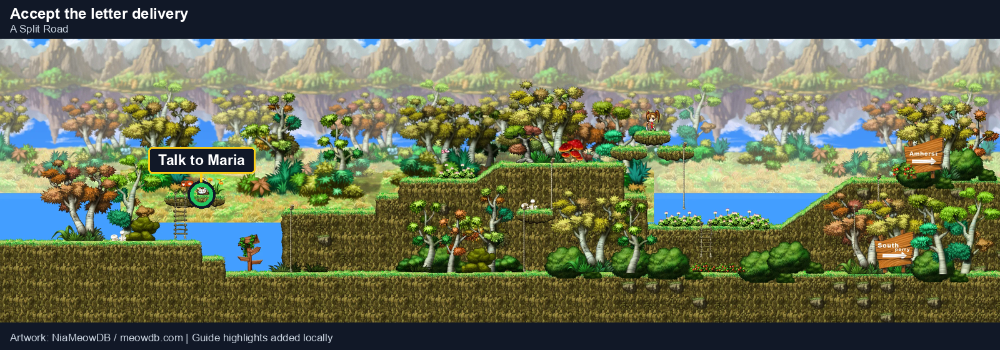
Complete when: Letter for Lucas is active and Maria's Letter is in your inventory.
Why: Maria is on the same map as Mai, and Lucas is in Amherst, which the route visits for Rain anyway. Accepting now carries the delivery on that trip at no extra travel cost.
Sources: Letter for Lucas
Map, completion and why
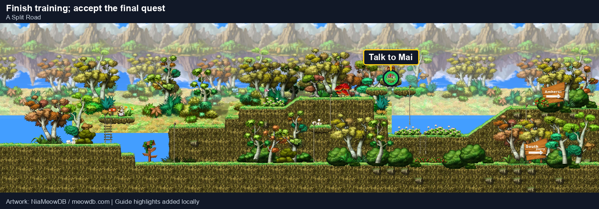
Complete when: Mai's Training is complete and Mai's Final Training is active.
Why: A Split Road lists 17 Blue Snails, 14 Shrooms and 11 Red Snails. That is more of each species than the three side forests that also have all three. Training here lets you turn in and pick up Final Training before leaving, so the Orange Mushroom kill happens on the field crossing you already need. This cuts the travel from Mai's first visit to Southperry from 7 portal hops to 5. The West Amherst field has more Shrooms and Red Snails but fewer Blue Snails; see Route decisions for that trade-off. Final Training has no level requirement.
Sources: Mai's Training · Mai's Final Training · A Split Road
Map, completion and why
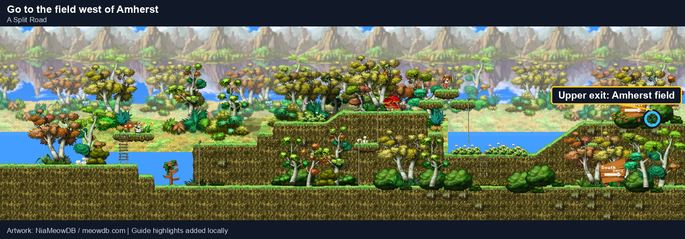
Complete when: You arrive on The Field West of Amherst.
Why: Amherst, where Lucas and Rain are, is reached only through this field.


6. Orange Mushroom and level 5 — The Field West of Amherst0 / 1
Map, completion and why
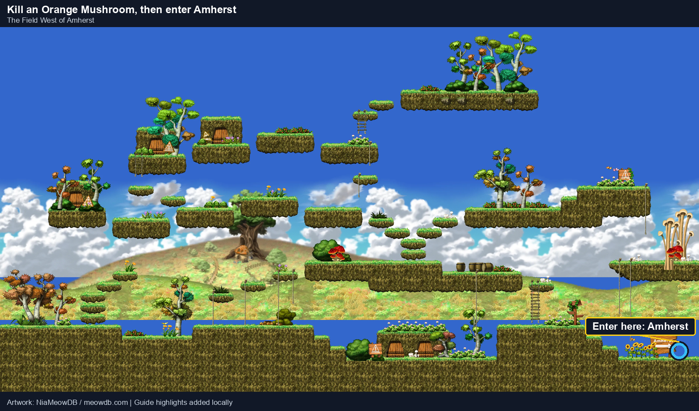
Complete when: Mai's Final Training shows 1 of 1 Orange Mushroom, you are at least level 5, and you arrive in Amherst.
Why: The field lists 5 Orange Mushrooms (7.6% of its monsters) and lies on the path to Amherst, so the kill needs no extra hops. Dangerous Forest lists 12 (35.3%) but adds two portal hops; see Route decisions. Rain's quizzes require level 5, so you must reach it before Amherst to avoid a second town visit. Finishing it here, where you already hunt the mushroom, adds no travel.
Sources: The Field West of Amherst · Mai's Final Training

7. Lucas, Pio and Rain — Amherst0 / 4
Map, completion and why
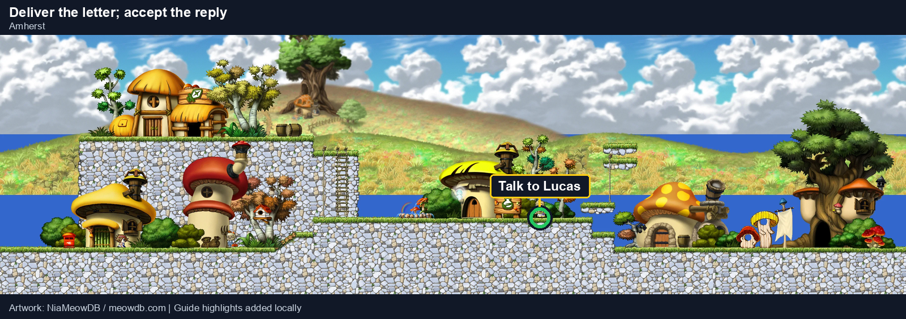
Complete when: Letter for Lucas is complete, Lucas's Reply is active and Lucas's Letter is in your inventory.
Why: You are in Amherst for Rain and Pio anyway, so the delivery adds dialogue but no travel. The reply is handed in to Maria on the way to Southperry.
Sources: Letter for Lucas · Lucas's Reply
Map, completion and why
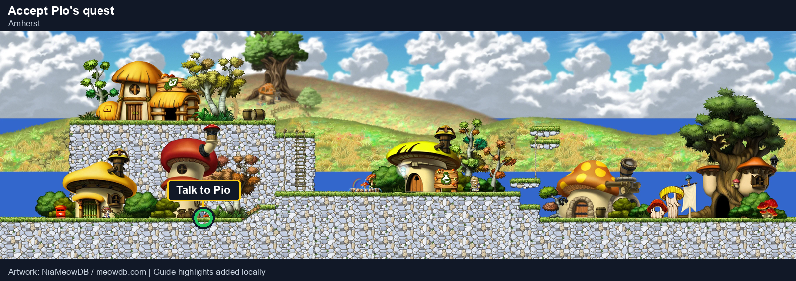
Complete when: You hold 2 Rusty Screws and 2 Old Wooden Boards with Pio's quest active.
Why: Pio's 150 mesos plus Mai's 150 make exactly the 300-meso ship fare. No other quest on the route pays mesos, and no shop is on the route. Amherst has 6 wooden boxes and you are already here for Lucas and Rain, so collecting needs no extra travel.
Unresolved: Box drop chances and how often each box gives a screw versus a board are not published; MeowDB lists them only as community-seen drops. Boxes respawn about every 2 minutes and other players may break them first, so the collection time is unknown.
Sources: Pio's Collecting Recycled Goods · Wooden Box
Map, completion and why
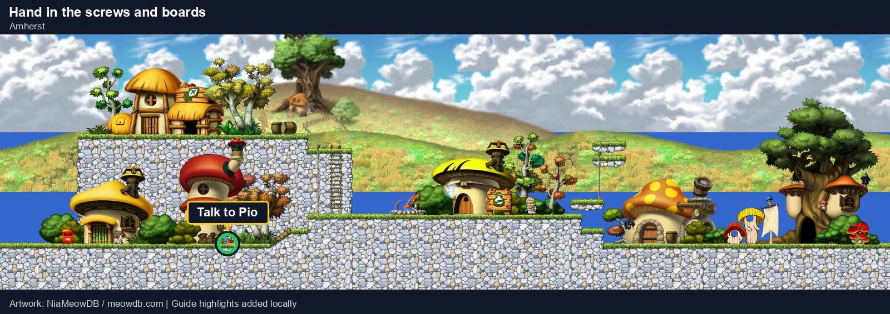
Complete when: Pio's Collecting Recycled Goods shows as completed and you have Pio's 150 mesos.
Why: This completes the ship fare. The chair restores HP while you sit, which saves potion money on Victoria Island.
Sources: Pio's Collecting Recycled Goods
Map, completion and why
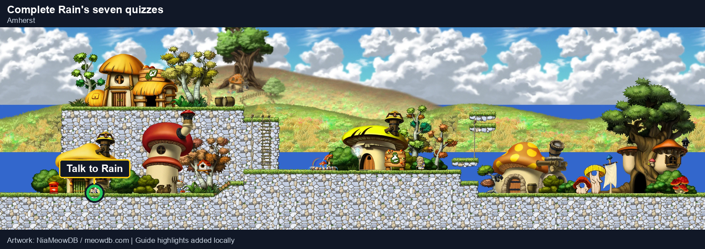
Complete when: Rain's Maple Quiz 7 shows as completed.
Why: These quizzes give 490 listed XP from dialogue alone, the largest quest XP total on the island, at no extra travel because Amherst is already on the route. The dialogue time is unmeasured, so the comparison against grinding is not yet timed.
Unresolved: Answers supported by the completion dialogue, in order: Up arrow; Yes; Equipment Inventory; Sleep; Level 10; 5 AP; Southperry. Some displayed checkmarks or option numbers disagree with that dialogue: use the answer text, not its index. This source says Magicians advance at 10; verify the live client rather than substituting another edition's rules.


8. Return for the bundled turn-ins — A Split Road0 / 4
Map, completion and why
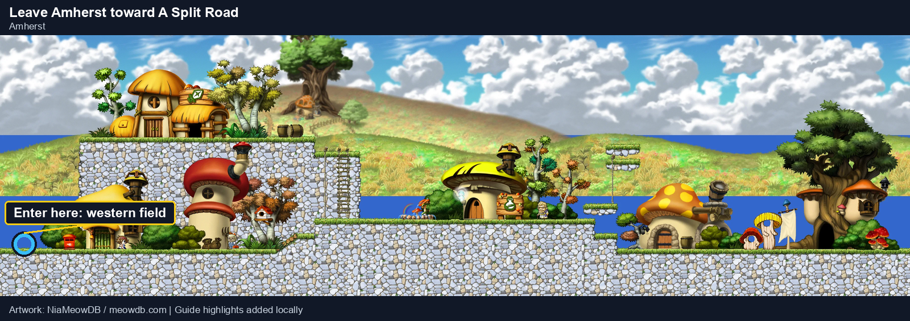
Complete when: You arrive on The Field West of Amherst.
Why: Mai, Maria and Southperry all lie back through this field. Amherst's eastern branch has no quest this route uses.
Map, completion and why
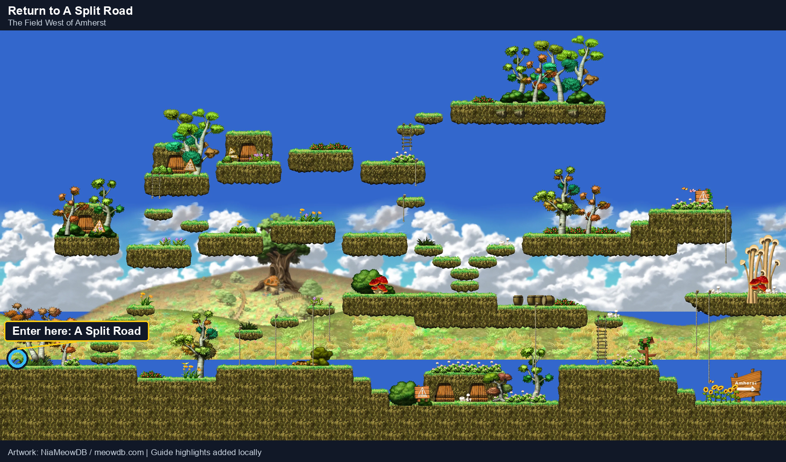
Complete when: You arrive on A Split Road.
Why: Both remaining turn-ins and the exit to Southperry are on A Split Road. The Orange Mushroom kill is already credited.
Map, completion and why
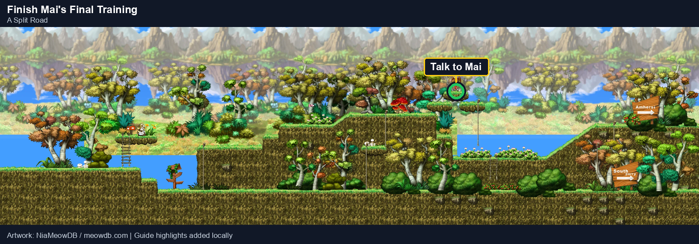
Complete when: Mai's Final Training shows as completed.
Why: This shares the stop with Maria's reply on the map you cross to reach Southperry, so neither turn-in needs its own trip.
Sources: Mai's Final Training
Map, completion and why
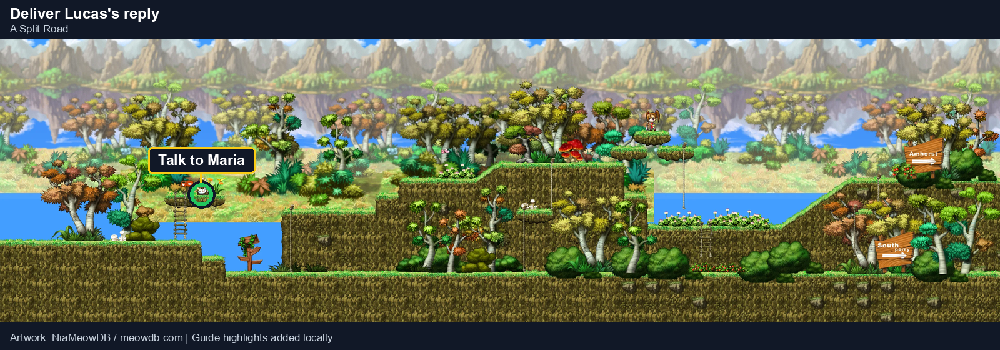
Complete when: Lucas's Reply shows as completed and Lucas's Letter is gone from your inventory.
Why: This is on the same stop as Mai's turn-in, just before the exit to Southperry, so it adds dialogue only.
Sources: Lucas's Reply


9. Southperry — sail to Victoria Island0 / 2
Map, completion and why
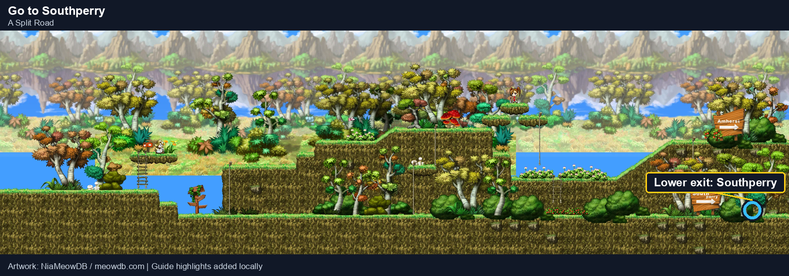
Complete when: You arrive in Southperry.
Why: Southperry is this draft's endpoint and is one portal from A Split Road.
Map, completion and why
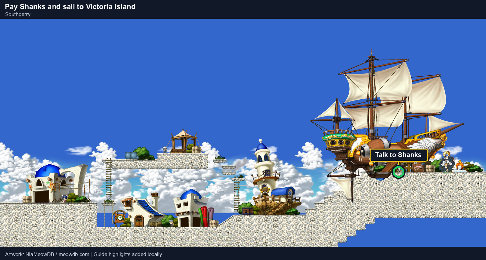
Complete when: You arrive in Lith Harbor on Victoria Island.
Why: Victoria Island is where the next part of the guide starts. Every included island quest is already handed in, and the boat cannot bring you back.
Unresolved: The level 7 requirement and 300-meso fare come from MeowDB's beginner guide, not from Shanks's own page. That guide disagrees with the quest pages on several rewards, so confirm both in the game. A third-party walkthrough reports Shanks giving 700 EXP on departure during the closed test; this is unverified and not counted here.
Sources: Shanks · Beginner's guide (fare and level)


Next: Part 2 — Lith Harbor to first job
You arrive in Lith Harbor on Victoria Island at level 7 or higher. Part 2 will cover levels 7 to 10: the early Victoria Island quests and travel to your class's job instructor for first job advancement at level 10. It is not written yet.
Route decisions and skips (9)
Pio's Collecting Recycled Goods is included to pay the ship fare
The ship costs 300 mesos. Of all island quests, only Mai's Final Training (150) and Pio (150) pay mesos, so Pio is the only guaranteed way to the fare without a shop detour. Monster meso drops and sale prices are not established, so skipping Pio cannot be shown to pay the fare. The cost is breaking Amherst's wooden boxes for 2 screws and 2 boards, with unknown drop chances and competition from other players. The reward is 100 quest XP, 150 mesos and a healing chair. This replaces the earlier skip, which did not account for the fare.
Leave at level 7; do not grind to level 8 on the island
Using MeowDB's XP table and each monster's listed EXP, the quest rewards and required kills alone take you to level 7 with about 134 XP left to level 8 (1,131 of 1,265). Level 7 is the ship's stated requirement, so no extra grinding is needed to leave. The last 134 XP is about 9 Orange Mushrooms or 17 Red Snails at listed EXP, and the extra kills on the way usually cover part of it. Grinding here only helps if island monsters give more XP per minute than the first Victoria Island maps, which cannot be checked until that data is collected. A third-party walkthrough also reports Shanks granting 700 EXP on departure, which would put you at level 8 on arrival; this is unverified, so the route does not rely on it.
Mai's Training is hunted on A Split Road, not on The Field West of Amherst
Source counts on A Split Road: 17 Blue Snails (40.5%), 14 Shrooms (33.3%) and 11 Red Snails (26.2%). On The Field West of Amherst: 13 Blue Snails (19.7%), 17 Shrooms (25.8%) and 24 Red Snails (36.4%). Neither map has more of all three species. Training on A Split Road lets you turn in and accept Final Training before leaving. The travel from Mai's first visit to Southperry is then Split Road, field, Amherst, field, Split Road, Southperry: 5 portal hops. Field training forces 7, because Final Training can only be accepted from Mai after the training is turned in. Field training wins only if its larger Shroom and Red Snail supply saves more hunting time than two extra field crossings cost. Neither time is measured, so this is the best found under equal-rate assumptions, not a proven minimum.
The Orange Mushroom is hunted on the field crossing, not in Dangerous Forest
Dangerous Forest lists 12 Orange Mushrooms (35.3% of its monsters), against 5 (7.6%) on The Field West of Amherst. It is a side map of the field, so using it adds two portal hops (in and back out). Only one kill is needed. The forest wins only if finding one Orange Mushroom on the field takes longer than the round trip plus the search inside the forest. Neither time is measured, so the break-even is unknown. The route uses the field because it needs no extra travel, not because it is proven faster.
Skip the other side forests on the West Amherst field
In a Small Forest, Hunting Ground Middle of the Forest I and Hunting Ground Middle of the Forest II each list fewer Blue Snails, Shrooms and Red Snails than A Split Road, and each costs two extra hops. Snail Garden lists more Blue Snails (19) and Mushroom Garden more Shrooms (23), but each lacks at least one training species. Using either means hunting on several maps plus a round trip. No source-count reason justifies these detours.
Skip Biggs's Collection of Items
Biggs (Southperry, level 3) asks for 10 Blue Snail Shells and 1 Orange Mushroom Cap. These are ordinary-item hand-ins, not kill counters. Mai's training kills 10 Blue Snails and Final Training only 1 Orange Mushroom, and the drop rates are unknown, so the route as written does not ensure you hold these items. A guaranteed cap would mean hunting extra Orange Mushrooms for an unknown number of kills. It is also unresolved whether items collected before accepting Biggs's quest count when you first accept it. An early pickup trip should not be assumed necessary, and the route does not schedule one. The quest lists 120 XP and a random Fruit Knife or Razor. Reconsider after testing in a compatible client: carry the drops to Southperry, accept, and try to turn in immediately. Guaranteed XP already reaches level 7 for the ship without Biggs, and Biggs pays no mesos, so skipping him does not block departure.
Skip Heena and Sera's mirror chain
Borrowing Sera's Mirror and Bringing a Mirror to Heena give 2 listed quest XP combined. They need a round trip through the other exit from Roger's map (2 portal hops) plus four interactions. Skipping them is decided by the very small reward; the exact time cost is unmeasured.
Skip shopping and Amherst's eastern branch
No included quest needs a purchase, and no included quest is east of Amherst. Neither detour has a measured benefit. A combat or supply blocker would require revising the route, not silently claiming the detour is efficient.
Mainland quests shown under island monsters are excluded
A matching monster does not make a mainland quest available on Maple Island.
Limitations
- All 25 maps in the island index were collected, and the source portal data reaches all 25 from Roger's map. The prescribed route takes 13 portal hops from Roger's map to Southperry, then the one-way ship to Lith Harbor; this count excludes walking within maps. Internal identifiers stay in the database and source manifests, not in player instructions or image labels.
- Source monster counts are spawn-list supply figures (counts, wave spawn counts, total mob count and spawn records agree on every monster map). They are not verified live populations. Respawn behaviour and class-specific reach or kill speed on each map are deliberately not modelled yet. Map choices assume equal kill rates and layouts, so they are a ranking, not a timing.
- The route is replayed against the retained source data. The check covers quest prerequisites, level and job gates, giver and turn-in locations, kill credit only while a quest is active, each directed portal, and the ship's level, fare and no-active-quests rule. XP and mesos are tracked as guaranteed minimums: quest rewards plus the required kills only, using MeowDB's XP table and monster EXP. Extra kills, drops and meso drops are not counted. On that basis you are level 7 when you board, about 134 XP short of level 8, with exactly the 300-meso fare.
- Unknown: travel, dialogue and kill times, drop rates, whether item hand-ins accept items collected before the quest, global kill-credit rules, and whether this second-closed-test data matches the live build. No measured minimum time, global optimum or fixed completion time is claimed.